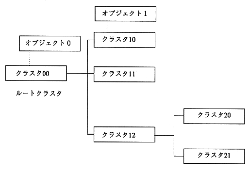

display model is a cluster of objects that are a collection of polygons as shown below. Connected to a hierarchical structure. The cluster is in a parent-child relationship and the child cluster option The object position is placed in the body coordinate system of the parent cluster. Therefore, the parent When the cluster moves, all child clusters connected below will move.

#include <machine.h> #define _SPR3_ / * Use sprite 3D display library * / #define SPR_3USE_DOUBLE_BUF / * Specify double buffer * / #include "sega_spr.h" #include "sega_scl.h" #include "sega_int.h"SprCluster model0; SprCluster model1;
#define COMMAND_MAX 1000 / * Maximum number of commands * / #define GOUR_TBL_MAX 1000 / * Maximum number of gour tables * / #define LOOKUP_TBL_MAX 1000 / * Maximum number of lookup tables * / #define CHAR_MAX 100 / * Maximum number of characters * / #define DRAW_PRTY_MAX 256 / * Maximum number of drawing priority blocks * / SPR_2DefineWork(work2d, COMMAND_MAX, GOUR_TBL_MAX, LOOKUP_TBL_MAX, CHAR_MAX, DRAW_PRTY_MAX) / * 2D work area definition * / #define OBJ_SURF_MAX 16 / * Maximum number of faces in the object * / #define OBJ_VERT_MAX 16 / * Maximum number of vertices in the object * / SPR_3DefineWork(work3d, OBJ_SURF_MAX, OBJ_VERT_MAX) / * 3D display work area definition * /